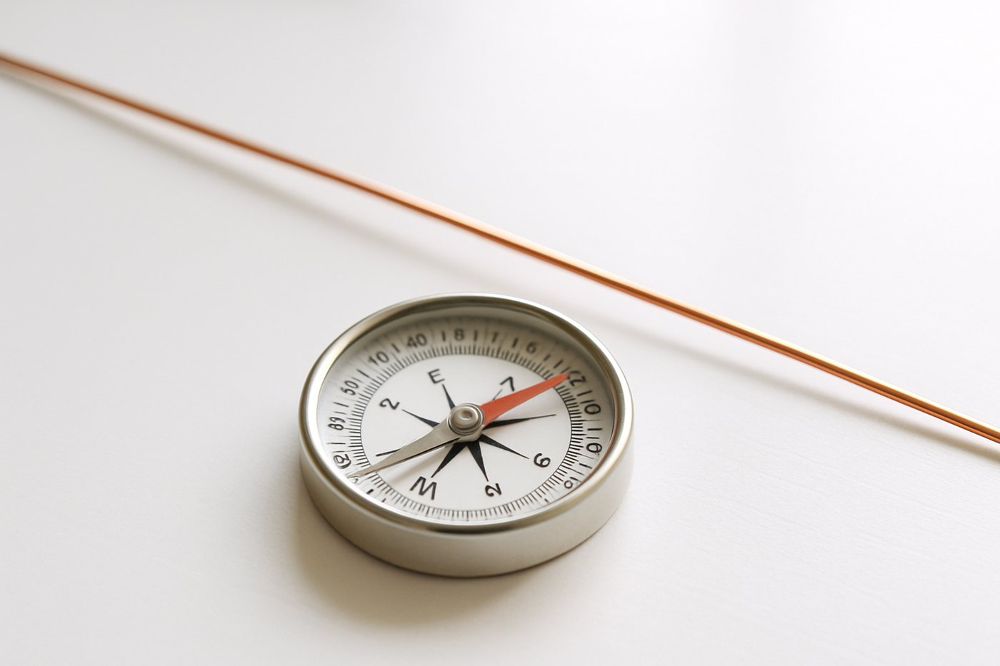

10 Min
Heute
Warum zuckt der Kompass?
- Ziel: Du erklärst, wie das Magnetfeld um einen Draht mit Strom aussieht und wovon seine Richtung abhängt.
- Auftrag: Forscherkarte, Schritt 0 bis 4, in der Gruppe.
- Regeln: Aufbau abnehmen lassen. Taster höchstens 3 Sekunden.
